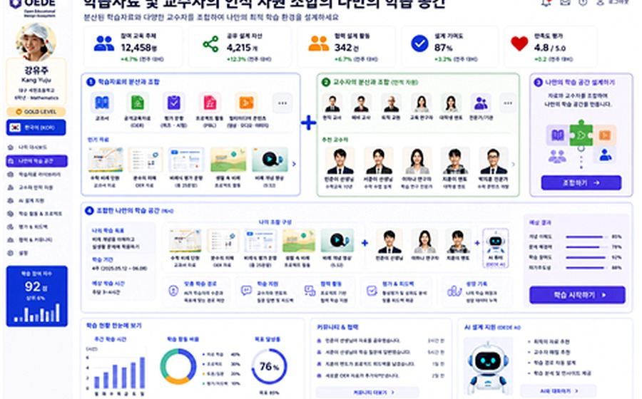
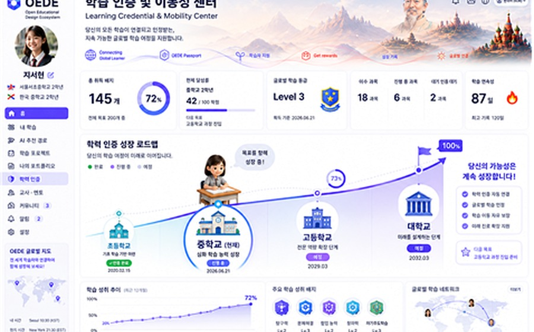

About OEDE
OEDE는 더 많은 콘텐츠를 만드는 플랫폼이 아니라, 이미 존재하는 교육 자산과 교육설계 경험을 연결·축적·재구성하는 생태계입니다.
Read more →
OEDE는 디지털화된 교재, 수업자료, 평가문항, 교사의 교육설계 경험, 멘토 지식, AI 지원을 연결하여 학습자가 자신의 학습 경로를 주체적으로 설계하도록 돕는 개방형 교육설계 생태계입니다.
학교와 온라인 공간에는 이미 많은 교육 자료가 있습니다. OEDE는 흩어진 자산을 연결 가능한 교육 자원으로 재구성합니다.
AI는 학습자의 수준과 목표에 따라 교재 블록, 교수자 설명, 멘토링 자원을 조합하는 보조 역할을 수행합니다.
러시아 고려인, 재일교포, 이주·전쟁·난민 상황의 학습자도 이전 학습 기록과 지원망을 바탕으로 학습을 이어갈 수 있습니다.
학생은 여러 교재 블록을 선택하고, 다양한 교수자와 멘토를 연결하며, AI의 제안을 참고해 자신만의 수업교재와 학습 경로를 구성합니다.
다수의 교재와 수업자료가 작은 학습 블록으로 정리되어 학생의 수준과 목표에 맞게 조합됩니다.
학교 교사, 외부 교사, 대학생 멘토, 은퇴 교사, AI 튜터가 하나의 학습 지원망으로 연결됩니다.
지역 이동, 이민, 재외동포, 전쟁·재난 상황에서도 학습 기록과 교육 자산이 연결되어 학습 회복과 지속을 지원합니다.
OEDE는 더 많은 콘텐츠를 만드는 플랫폼이 아니라, 이미 존재하는 교육 자산과 교육설계 경험을 연결·축적·재구성하는 생태계입니다.
Read more →AI 기반 콘텐츠, 분산형 교수설계, 학습분석, 학습자 참여, 교육복지, 학습 인증, 글로벌 학습 계층으로 구성됩니다.
Explore architecture →KSET 논문을 기반으로 EdMedia, AACE, EC-TEL, UNESCO 계열 논의로 확장될 연구 방향을 제시합니다.
View research →중앙 핵심 영역만 보이도록 정리하여 방문자가 기능을 빠르게 이해할 수 있게 구성했습니다.

학생이 교재 블록과 교수자 자원을 조합하여 개인화된 학습 경로를 구성하는 모습을 보여줍니다.

지역과 학교를 이동해도 학습 이력과 성취가 이어질 수 있는 구조를 시각화합니다.